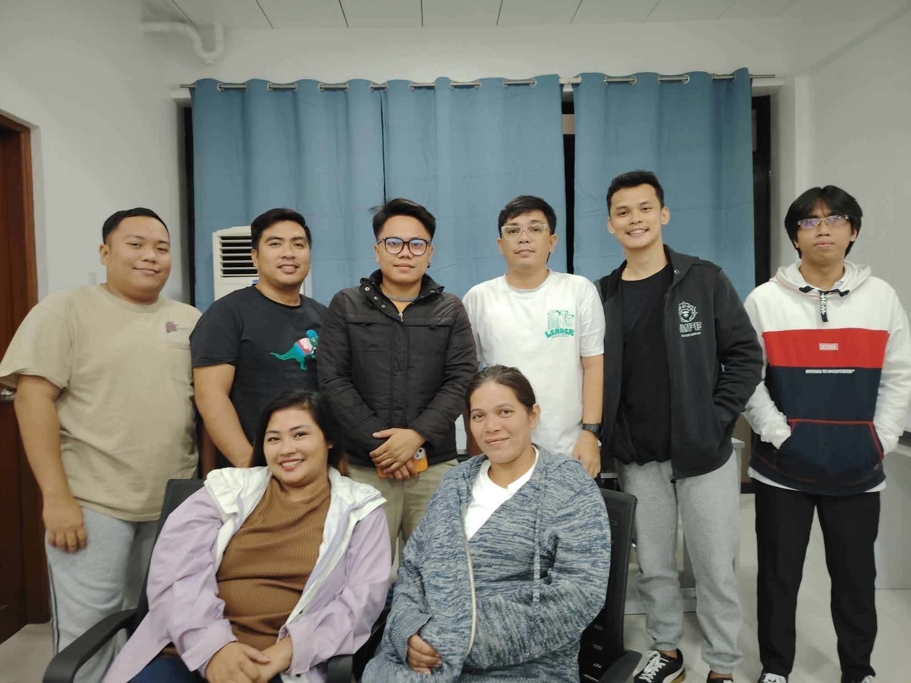

Customer care
Help keep incoming questions, service requests, and follow-ups organized across the channels your business uses.
The Virtual Answer helps businesses organize customer conversations, follow-ups, and everyday operations with thoughtful remote support.
A thoughtful approach to everyday supportDTI-registered business name: TVA Virtual Assistance Service
Start with the tasks that take up time or fall between the cracks. We’ll talk through what support may fit and confirm current availability.
Help keep incoming questions, service requests, and follow-ups organized across the channels your business uses.
Organize prospect information, follow-up lists, and appointment coordination using your process and approved scripts.
Get help with data entry, inbox organization, scheduling, document preparation, and routine administrative tasks.

The Virtual Answer is a locally rooted virtual assistance service connecting businesses with people ready to support the work behind the scenes. We believe good partnerships begin with listening, clear expectations, and respect for the people doing the work.
Get to know TVAThe right support depends on your workflow. Here are common work areas to discuss with us.
Keep inquiries moving with organized intake, message handling, and customer follow-up.
Support schedules, appointments, service requests, and next steps.
Maintain records, update spreadsheets, prepare documents, and help keep the back office tidy.
Tell us what a typical week looks like, which tasks you’d like to delegate, and what a good result means to you. We’ll discuss fit, communication, access, and next steps before work begins.
See how it worksShare what your business needs help with. We’ll follow up to discuss the work, timing, and current availability.